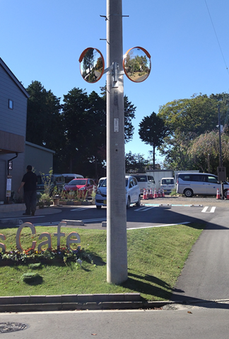
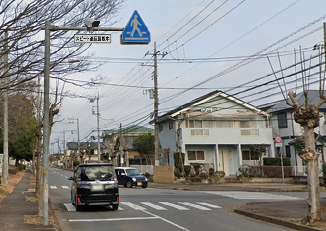

2026年11月15日・検討のための問題提起です。設置が決まったことを示すものではありません。
防犯カメラの設置場所としてカーブミラーを考えましたが、市の担当者から、カーブミラーに余計なものを付けてはいけないという規則があるため不適との説明を受けました。 別の場所を探すだけでなく、この機会に、カメラの使い方と、地域と市の役割を考え直してみたいと思います。
規則の目的に立ち返る
規則には安全性や公平性を守り、仕事を効率よく進める役割があります。思いつきだけで変えるべきではありません。 ただ、規則や前例を確認して終わるのではなく、何を防ぐための規則で、カメラにはどのような支障があるのかを具体的に考える余地はないでしょうか。
カーブミラーは電柱に取り付けられることもあります。では、カーブミラーにカメラを付ける場合は何が違うのでしょうか。 設備ごとの規則や管理者は異なりますが、視認性、強度、維持管理などを比べて考えたいところです。

防犯だけでなく、地域の課題にも
映像が事件の確認に必要になる機会は、数年に一度かもしれません。一方、カメラの存在による犯罪の抑止も期待されます。 さらに、速度超過の実態やアオギリの落葉状況の把握にも役立てられないでしょうか。

普通のカメラで速度違反を判定できるとは限らず、落葉の確認に常時撮影が必要かも検討が必要です。 標識への設置の可否も、管理者への確認が必要です。 市の補助制度では、映像の設置目的以外への利用・提供は原則制限されています。複数の目的での利用が可能か、市に相談したいと思います。
映像からの車速推定の実験では、既知の速度で走る車の模式的な動画を作り、映像から速度を推定できるかを試しています。 実際の映像での精度や、速度超過を見分けられるかは、まだ確認していません。
安心のために、監視を広げすぎない
用途が増えれば便利になる一方、監視社会化やプライバシー侵害への懸念も大きくなります。 住宅や通行人をどこまで映すか、誰が映像を見られるか、いつ消すか、用途の変更を誰が決めるか。 設置前に住民と話し合い、必要な範囲に絞ることが欠かせません。
地域と市が一緒に考える
自治会の役員は本職の合間に活動し、市役所への相談にも休暇が必要な場合があります。 市の補助制度では設置を支援する一方、維持管理費は補助対象外です。 地域に負担を委ねるだけでなく、市の専門職員にも、規則の趣旨や支障を説明し、関係先との調整や代案探しを共に担うことを期待します。
効率のためのルールと、個々の課題を丁寧に考えることをどう両立するか。 防犯カメラをきっかけに、地域と市の双方で考えたいと思います。
関連情報
- 防犯カメラ設置プロジェクト概要
- アオギリの管理を、毎年決め直すのか？
- つくば市防犯カメラ設置事業補助金（交付要綱・申請の手引きを含む）